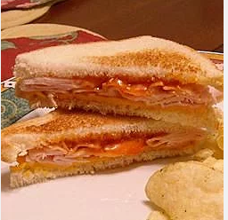

The Earl's Sandwich

Description
This is a quick, delicious sandwich that's sure to get you hooked.
Ingredients
- 2 slices American cheese
- 2 slices white bread, toasted
- 3 slices deli-style sliced turkey breast
- 2 tablespoons Russian salad dressing
Steps
- Place American cheese onto one slice of toasted bread. Microwave 15 to 20 seconds on High until cheese has melted. Place turkey onto melted cheese. Spread Russian dressing onto one side of the remaining slice of toasted bread. Place on top of turkey, dressing-side down to create a sandwich.
Credits to this page